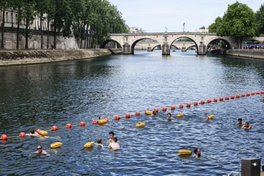
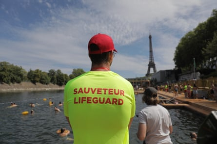

Parisians and tourists flocked to take a dip in the Seine River this weekend after city authorities gave the green light for it to be used for public swimming for the first time in more than a century.
The opening followed a comprehensive clean-up programme sped up by its use as a venue in last year’s Paris Olympics after people who regularly swam in it illegally lobbied for its transformation. The outgoing mayor of Paris, Anne Hidalgo, also helped to champion the plans, jumping in the river herself before the Olympics.
About 1,000 swimmers a day will be allowed access to three bathing sites on the banks of the Seine for free, until the end of August.
About €1.4bn (£1.2bn) has been invested in the project including inconnecting more than 20,000 homes to the sewer system (the waste from which had hitherto been dumped directly into the Seine), improving water treatment facilities and building substantial rainwater storage reservoirs equivalent in size to 20 Olympic swimming pools to avoid overflows of sewage during rain storms.
People swimming near the Pont Marie.Photograph: Teresa Suárez/EPA
Paris’s efforts have been in part inspired by, and have helped to inspire, similar popular projects in cities around Europe where campaigners have fought to reclaim waterways for swimming. Concerns about allowing city dwellers to cool down amid increasing summer temperatures have been at the heart of their arguments.
Despite health concerns that affected some Olympic training sessions last summer, as well as the men’s triathlon event, races went ahead as planned, helping to increase confidence in the public swimming plans. Tourist authorities predict it will become one of the most talked about pastimes of the season and act as a magnet for visitors. The bathing spots are located near to the Eiffel Tower – which is focused on swimming for families with small children – the Notre Dame Cathedral and the National Library.
A lifeguard at one of three safe swimming sites on the Seine.Photograph: Anadolu/Getty Images
Lifeguards are present, and changing and shower facilities are available. Water quality will be tested daily by health authorities and a flag system will indicate how safe it is to swim. Diving is not permitted due to the shallowness of the water.
In addition to the three Paris sites, 14 bathing spots beyond the city on the Seine and Marne rivers are planned. Two, on the Marne, opened in June.
The French president, Emmanuel Macron, now has no excuse not to fulfil one of his promises to the electorate – that he too would one day bathe in the Seine when it was possible to do so.